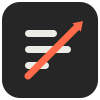
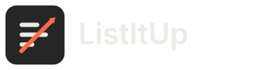

Mark: three list bars crossed by a single ascending arrow — "list" + "up" — in the one brand accent
(#FF6B4A). Dark surface is
the default per DESIGN.md;
the light variant matches the app's light theme toggle. Not wired anywhere yet.

